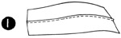
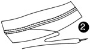
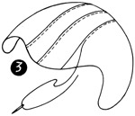
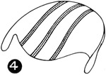
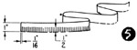
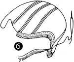
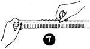

1952—How to Make Hats
by Ruby Carnahan
Fringed Felt Casual Hat
MATERIAL REQUIRED FOR HAT AND BAG
- 1/2 yard of wool felt
FRINGED FELT CASUAL HAT
Make this hat of any color wool felt or use a combination of color, using one color felt for hat and a contrasting color felt for fringe trimming.
CUTTING FABRICS
Use pattern on page 73 for hat.
Lay pattern on a double piece of felt and mark around pattern on felt and cut out. Mark back and front on each piece of felt and mark side seams as indicated on pattern.
ASSEMBLING
(Illus. 1) Match notches on center pieces, baste together and stitch.
Steam seam open, and (Illus. 2) stitch each side of seam flat. Trim off excess material on seams.
(Illus. 3) Match front of each side piece to front of center piece, and baste together on side seam.
Stitch and steam press seam open and (Illus. 4) stitch each side seam flat. Trim seams.
FRINGE TRIMMING
(Illus. 5) Cut a strip of felt 1"x36".
Fringe one side of felt 1/2" deep and make fringe 1/16" wide. (Illus. 6) Start at back seam of hat and fit fringe strip of felt around hat to underside. Baste and stitch felt strip to hat. Cut two strips of felt 1" x 3".
Fringe each side of these strips of felt 3/8" deep. (Illus. 7)
Gather down center of each strip and sew into a little felt pom pom. Pin each rounded flap in front to back seam, mark, and sew together with pom pom (Illus. 8).